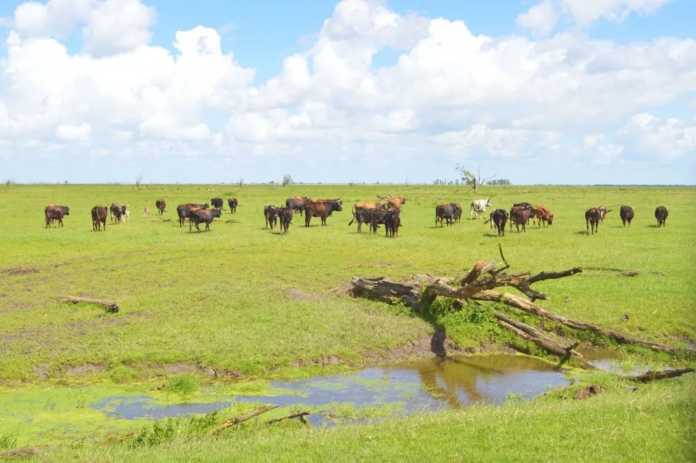
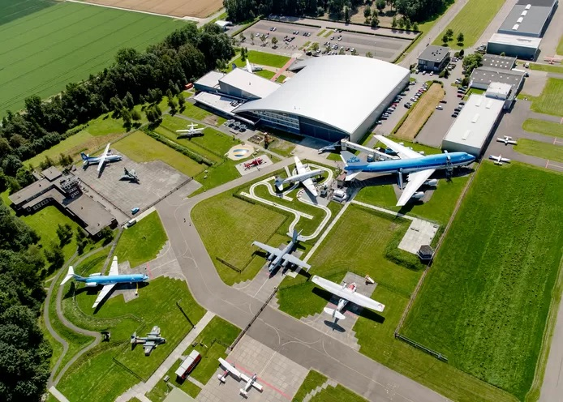

De Oostvaardersplassen is een bijzonder natuurgebied in Almere. Het is een uitgestrekt moerasgebied waar veel verschillende vogels en dieren leven. Het is een ideale plek voor vogelliefhebbers en natuurfotografen.
Het Aviodrome is een luchtvaartmuseum in Almere waar je alles kunt leren over de geschiedenis van de luchtvaart. Het heeft een grote collectie vliegtuigen en interactieve tentoonstellingen voor jong en oud.
